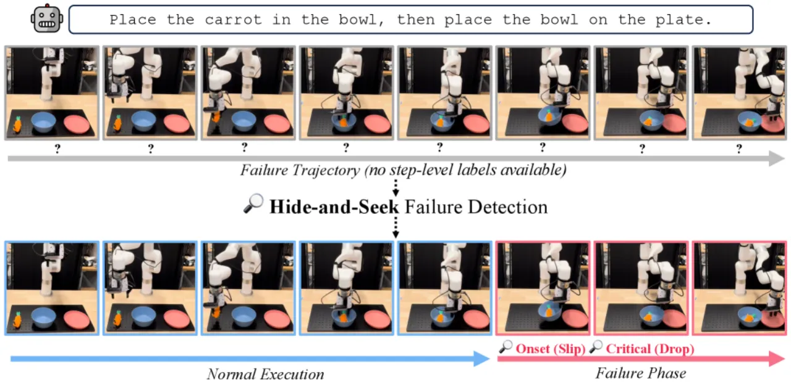
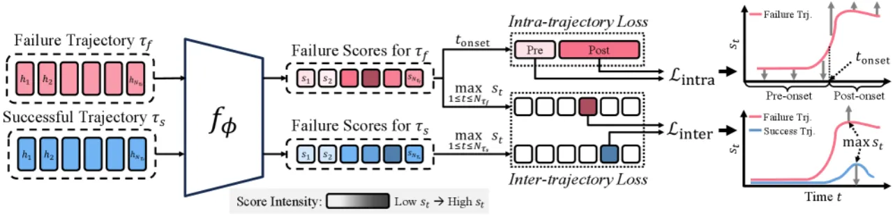
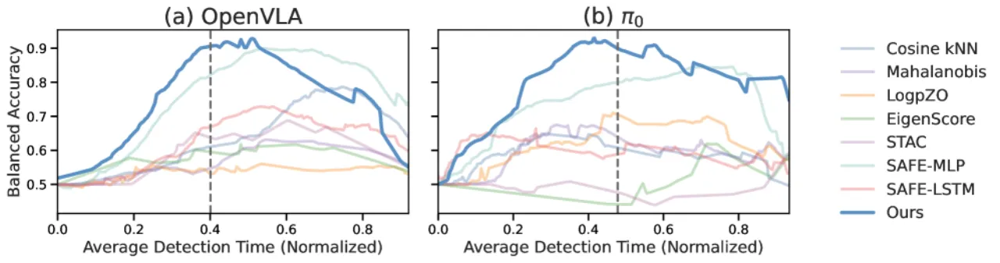
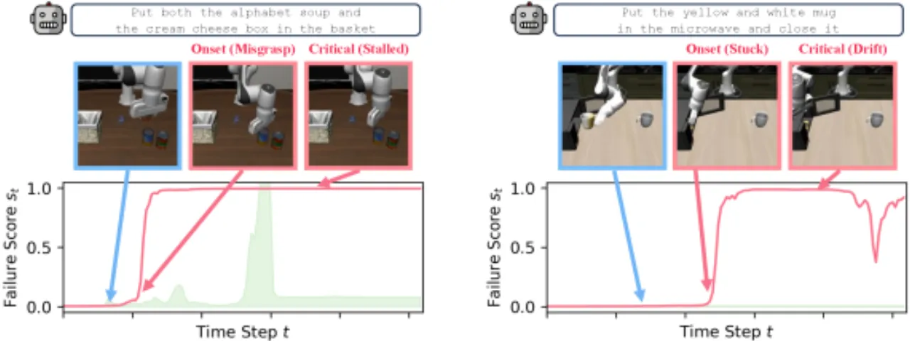
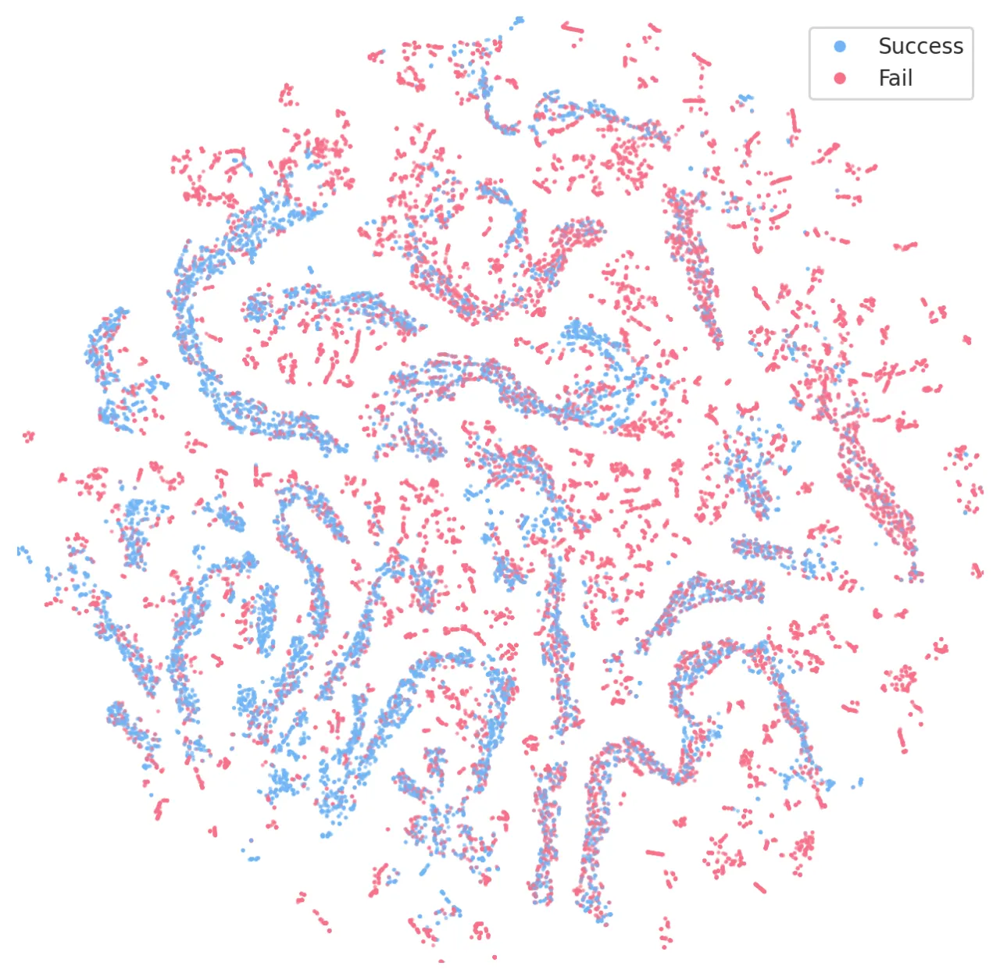
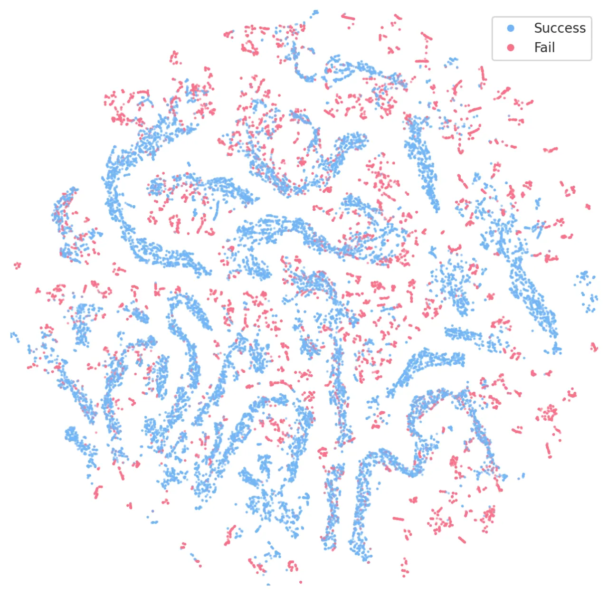

失败轨迹里绝大多数动作其实是正常的，真正“出错”的往往只是少数几步，但训练时只有一条轨迹级的成功/失败标签。Hide-and-Seek 把 VLA 失败检测建成 coarsely supervised learning 问题：用跨轨迹 + 轨迹内两个对比目标，从轨迹级监督中定位最具失败指示性的动作，无需任何逐步标注，再借 conformal prediction 做运行时报警。
VLA（Vision-Language-Action）模型让机器人能按自然语言指令泛化到多样任务，但执行中仍会失败，实时检测失败是可靠部署的关键。现有方法卡在两条轴上：监督成本——逐步（step-level）失败标注昂贵、难以规模化；计算实用性——action resampling / 外部 VLM judge 推理开销大，无法实时。近期 SAFE 把轨迹级标签均匀贴到每一步，却把失败发生前的正常动作误标为失败，引入大量 label noise。
“the failure signal is hidden among largely normal behavior within a trajectory, and the detector must seek it out using only the trajectory-level outcome as a clue.”

给定一批成功轨迹与失败轨迹（仅轨迹级标签 y∈{0,1}），从 VLA 的 action token / action head 抽取每步 action embedding，训练一个轻量时序检测器 fϕ（默认 single-layer LSTM），对每个前缀输出标量 failure score st∈(0,1)。核心是用两个互补粒度的对比目标，把“轨迹级监督”转成“有时序结构的逐步失败信号”。

不再逐步独立分类，而是聚焦于最具失败指示性的一步：对失败轨迹 τ_f，至少有一步分数应真正升高，且要高于成功轨迹 τ_s 中最像失败的那一步（hardest false-positive，如一次短暂犹豫或尴尬中间姿态但最终恢复）。用 margin-based contrastive loss 强制 max(s|τ_f) 比 max(s|τ_s) 高出 margin m。该目标不假设失败发生在哪一步，而是自适应地把最显著的失败信号“找出来”。
仅用 ℒ_inter 只优化单个峰值，周围时序结构仍无监督。由于 failure onset 之后成功概率下降，作者引入第二个目标：在每条失败轨迹内定义 proxy failure onset（failure score 上升最陡的点），鼓励 onset 之后的平均分数 > onset 之前的平均分数。论文证实该 proxy 与人工标注的 onset 高度吻合，把粗监督转成时序结构化的失败信号，全程无需逐步标注。总损失为 ℒ = ℒ_inter + λ·ℒ_intra。
部署时每步产出 st，超过阈值 τt 即报警。为避免固定阈值不适配分数的时序演化，采用 functional conformal prediction：在一组留出的成功轨迹上标定一条随时间变化的预测带，在 exchangeability 假设与用户指定显著性 α 下，保证新成功轨迹的轨迹级 false alarm rate ≤ α。为降低时序冗余，先做非重叠 sliding-window 平均池化（窗口 w）。
在两个仿真基准 LIBERO-10、VLABench 与真实 UFactory xArm 6 平台上评测多任务失败检测，覆盖自回归与 flow-matching 两类范式的 3 个 policy：OpenVLA、π₀、π₀.₅；采用 held-out task 协议区分 seen / unseen，结果对 3 个随机种子取平均。指标：bACC（balanced accuracy，主指标）、wACC（weighted accuracy）、TWA（time-weighted accuracy，惩罚晚检测）；三者均在 conformal α∈{0.15, 0.20, 0.25} 上平均。对比 12 个 action-based baseline（OOD / multi-sampling / classifier / token-uncertainty）。
| 基准 / Policy | 划分 | SAFE-MLP | Ours | Δ bACC |
|---|---|---|---|---|
| LIBERO-10 · OpenVLA | Seen | 0.823 | 0.852 | +2.9 |
| LIBERO-10 · OpenVLA | Unseen | 0.775 | 0.834 | +5.9 |
| LIBERO-10 · π₀ | Seen | 0.870 | 0.885 | +1.5 |
| LIBERO-10 · π₀ | Unseen | 0.801 | 0.892 | +9.1 |
| VLABench · π₀.₅ | Seen | 0.788 | 0.856 | +6.8 |
| VLABench · π₀.₅ | Unseen | 0.641 | 0.713 | +7.2 |
| Real CUBE · π₀.₅ | Unseen | 0.797 | 0.914 | +11.7 |
Hide-and-Seek 在所有 model × benchmark × (seen/unseen) 上于 bACC/wACC/TWA 均取得 SOTA。OOD 方法在 seen 上有竞争力但 unseen 大幅退化（如 Mahalanobis 在 OpenVLA 上从 67.0% 跌到 51.3% bACC）；SAFE-MLP 用线性增长的时间权重部分缓解均匀标注，但该固定启发式对“失败何时发生”无感知。真实机械臂上，Hide-and-Seek 在四个设置的 TWA 全部最优，unseen CUBE 较 SAFE-MLP +11.7% bACC、+15.0% TWA；SAFE-MLP 在 seen CUBE 高达 99.2% bACC 却在 unseen 跌到 79.7%，而本方法跨设置稳定。


仅 ℒ_inter 已超最强 baseline SAFE-MLP（OpenVLA +2.6%、π₀ +2.1%）；仅 ℒ_intra 表现下降，因其依赖 onset proxy，需 ℒ_inter 先塑造分数动态才有意义；两者结合再提升（OpenVLA +1.8%、π₀ +3.2%）。
能利用时序上下文的 backbone（GRU/Transformer/LSTM）显著优于逐步 MLP，LSTM 最稳作默认。对比 VLM monitor（Qwen3-VL-8B）：Ours bACC 0.843 vs 0.712，延迟 0.001s vs 2.343s（超 2000× 更快）。


Hide-and-Seek 对 VLA 内部 embedding 的 degree-of-freedom 维度做平均，可能丢掉对某些失败模式有用的 kinematic structure，例如只在特定关节或末端执行器构型上显现的失败。作者建议探索 kinematic-aware 的特征聚合。
部分失败在本质上是感知型（perceptual）的，仅靠 action-level embedding 未必能完全捕捉；作者提出把视觉观测与动作表征联合起来构建 multimodal failure detector 作为补充信号。
Broader Impacts 指出：failure detector 并非绝对可靠——false negative 会漏检、false positive 会触发不必要的干预。作者将 Hide-and-Seek 定位为更大系统中的一个监控组件（辅以硬件约束、上层监督等），而非可靠性的独立保证。闭环矫正/恢复/多轮交互留作 future work。